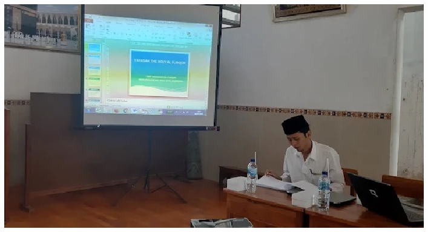
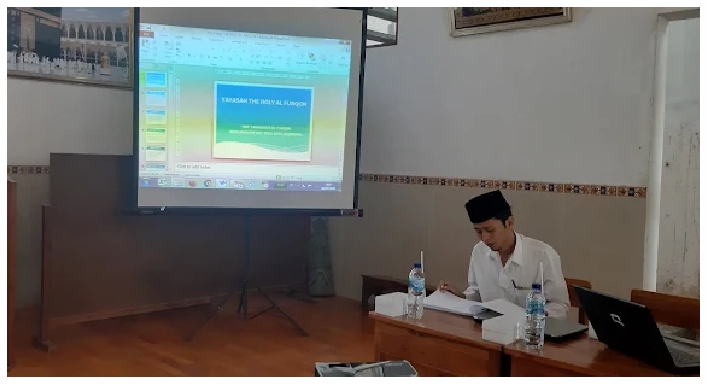

Profil Sekolah
SMP Takhassus Al-Furqon adalah sekolah menengah pertama berbasis Islam yang berfokus pada pendidikan Al-Qur'an dan penguatan karakter siswa. Sekolah ini sendiri merupakan skolah dibawah naungan Yayasan Al-Furqon yang juga terdapat Pondok Pesantren didalamnya, yaitu Pondok Pesantren The Holy Al-Furqon, didirikan oleh KH. Afifuddin Musytary Al-Hafidz pada tahun 1986 dan telah mencetak generasi santri Qur'ani dari seluruh penjuru indonesia khususnya jawa tengah.
Berita Terbaru


Upacara peringatan Hari Pendidikan Nasional telah dilaksanakan dengan khidmat pada tanggal 2 Mei 2025.
Galeri
 

Video Kegiatan
PSB 2025/2026
Informasi mengenai Penerimaan Siswa Baru (PSB) untuk tahun ajaran 2025/2026.
Assalamualaikum wr wb.
Pendaftaran Penerimaan Santri Baru Tahun Ajaran 2025/2026 SMP Takhassus Al Furqon telah dibuka ❗❗
Pendaftaran offline & online :
üìçKantor PonPes The Holy Al Furqon (Senin-Sabtu, 08.00-13.00 WIB)
üí¨ WhatsApp 0851-8906-4063
Yukk daftarkan diri anda sekarang juga
Kontak
Alamat: Jl. Mangkang Wetan - Mangunharjo, Mangkang Wetan, Kec. Tugu -
Kota Semarang - Jawa Tengah 50154
Email: -
Telepon/WA: 0851 8906 4063
Facebook: SMP TAKHASSUS AL-FURQON
Instagram: SMP TAKHASSUS AL-FURQON